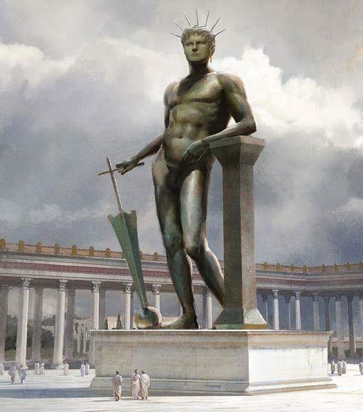

Koloseum
Budowa
Koloseum, znane również jako Amfiteatr Flawiuszów, zostało zbudowane w Rzymie w latach 70-80 n.e. na polecenie cesarza Wespazjana i ukończone za panowania jego syna Tytusa. Było to największe i najbardziej zaawansowane technicznie amfiteatrum w starożytnym Rzymie. Zostało zbudowane głównie z betonu, trawertynu i tufu wulkanicznego.
Wymiary Koloseum:
| Długość | 188 m |
| Szerokość | 156 m |
| Obwód | 524 m |
| Wysokość | 48,5 m |
| Ilość miejsc | 45-50 tysięcy |
Funkcje i wydarzenia
Koloseum było areną, na której odbywały się widowiskowe igrzyska, takie jak walki gladiatorów, polowania na dzikie zwierzęta, rekonstrukcje bitew morskich, a nawet egzekucje. Było miejscem nie tylko rozrywki, ale także propagandy politycznej, podkreślającym potęgę i bogactwo Imperium Rzymskiego. Wstęp na widowiska był zazwyczaj darmowy, co miało na celu zdobycie poparcia ludu.
Powrót na początek stronyHistoria
Jak widać na obrazie powyżej, Koloseum zostało z jednej strony uszkodzone. Stało się tak z powodu pożaru, który został wywołany uderzeneim pioruna w budynek w 217 roku oraz licznymi trzęsieniami ziemi. Nawet upadek Imperium Rzymskiego na zachodzie nie zatrzymał popularności walk gladiatorów w tym regionie. Ostatnie historyczne ślady igrzysk sięgają około 525 roku naszej ery. Nazwa Pochodzi od 35-metrowego posągu Nerona, zwanego kolosem. W 1744 roku Koloseum zostało ogłoszone miejscem męczeństwa chrześcijan z powodu prześladowań wyznawców tej religii w okresie Cesarstwa Rzymskiego. Od drugiej połowy XVIII wieku w każdy Wielki Piątek odbywa się tu Droga Krzyżowa pod przewodnictwem papieża.
Posąg Nerona - Kolos
Powrót na początek strony